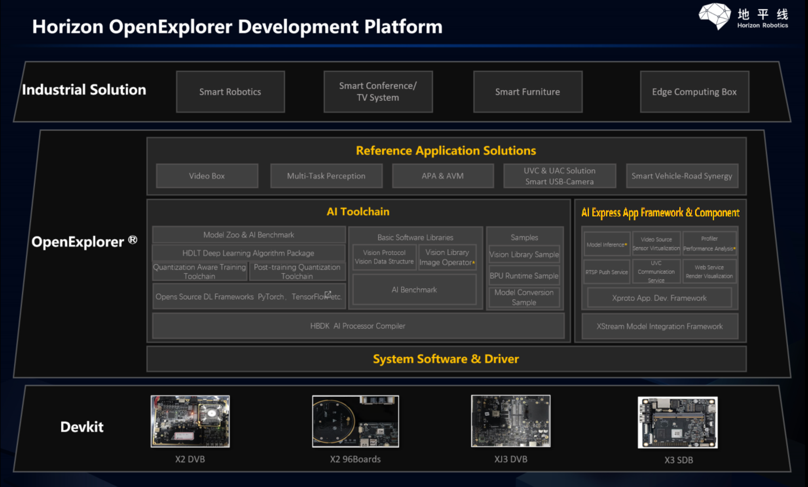

About Development Platform¶
Horizon SOC Development Platform refers to OpenExplorer Development Platform (OpenExplorer), It is Horizon’s own-developed processor supporting AI application development platform.
{kind=link}
It consists of 4 components: Basic System Software, AI Toolchain, AI Express Application Development Component & Framework and Application Samples.
1. Basic System Software¶
X3/J3 AI processors use embedded Linux operating system (OS). Basic system software layer provides user APIs corresponding to AI processor hardwares. These APIs are:
Image Datapath consists of an API function list of image datapath modules e.g. MIPI, ISP, IPU etc. and an API function list of H264/265/JPEG encoding/decoding modules.
ION Memory Operations consists of memory operation related functions.
BPU hardware related is used for searching for status of BPU AI accelerator.
Others consists of GPIO, USB etc. peripheral operation related API functions, as well as Linux OP related API functions.
In addition to API functions, system software layer also provides some OS search and configuration toolkits. More information about system software related features please refer to corresponding product manuals.
2. AI Toolchain¶
AI Toolchain aims to deal with deep neural network model training, conversion and deployment.
Horizon AI Toolchain utilizes post-training quantization technique to realize deep neural network model compute acceleration.
Note
Deep neural network model post-training quantization is a network performance optimization technique. It reduces storage & computing volume by decreasing weight and activation values and can further realize compute acceleration at SOC level. In non-quantization scenarios, model weight and activation values are in 32-bit floating-point numbers, while compute volume can be reduced exponentially by quantizing them into 16-bit, 8-bit or 4-bit fixed-point values.
Typically, there are 16-bit, 8-bit and 4-bit quantization solutions, while Horizon XJ2/XJ3 presently utilize 8-bit quantization solution.
Horizon has 2 sets of quantization toolchains, namely the Quantization Aware Training Toolchain and the AI Toolchain, they respectively correspond to the QAT (Quantification Aware Training) and the PTQ (Post-Training Quantization), as shown in below frame diagram:
{kind=link}
2.1 The QAT Solution¶
The QAT (Quantification Aware Training) solution, can directly generate quantized models in training process. This solution is developed based on those most popular opensource DL frameworks. X/J3 AI processors can support 2 DL frameworks, namely MXNet Gluon and TensorFlow, While J5 AI processor can support PyTorch framework. It is expected that X/J3 AI processors will also be able to support PyTorch framework by the 2nd half of 2021.
Each solution consists of a Quantization Plugin, a Vision Algorithm Package and a model_zoo model repository. Take the TensorFlow QAT toolchain as an example:
{kind=link}
Horizon Plugin TensorFlow, as a TensorFlow Plugin, can add new quantized operators (OPs) and provide quantized model training capacity.
Horizon Vision Tensorflow Algorithm Package focuses on all types of embedded vision scenarios and enhances the functionalities of TensorFlow at all dimensions including: data pre-processing, Loss function, Metric indicator, Callback function and training tool etc. It has rich build-in backbones/postprocess structures to help boost the reuse in operator development and improve algorithm development efficiency. Meanwhile, there are build-in favorable models in the algorithm package which can help users quickly train their own productized models based on user private dataset.
Horizon model_zoo Model Repository provides Horizon’s opensource pretrained models and training scripts. There are basic models and reference models.
As the QAT toolchain generated models are quantized models (e.g. the Horizon Plugin TensorFlow generated ***.pb quantized models), it is required to compile those quantized models into instruction set models (i.e. ***.hbm) using HBDK AI Processor Compiler Toolchain.
HBDK AI Processor Compiler Toolchain refers to a set of command-line tools who is predominated by the hbdk-cc compiler.
It can compile the QAT solution trained fixed-point models into HBM instruction set files and thus support model deployment
onto Horizon AI Processors. Meanwhile, the hbdk-pack model packaging tool provides the ability to package multiple HBM
files into one file, so as to simplify model deployment onto dev board. On top of that, there are rich static model evaluation
tools, e.g. x86 model simulating evaluation, model consistency validation tool and a toolset composed by the hbdk-perf,
hbdk-sim and hbdk-model-verifier tools.

hbdk-cccompiles a model (MXNet/TensorFlow) into model library file (i.e. ***.hbm).hbdk-packpackages one or multiple model library files (***.hbm) into one model library file (***.hbm).hbdk-perfevaluates the performance of model library files (***.hbm) on X3/J3/J5 AI processors and generate analysis log.hbdk-model-verifiervalidates the models in model library in order to ensure the accuracy of model executions on X3/J3 AI Processors.hbdk-simruns the models in model library and obtains prediction results.hbdk-model-checkchecks if models can satisfy standards of specific BPU micro architectures.
Note
The QAT solution, on the one hand, can make better use of the advantages of Horizon’s AI Processors, generate quantized models who better fit Horizon’s AI Processors and hence help achieve better model performance and quantization accuracy. On the other hand, it has higher demands on algorithm developers’ model design and quantization training qualities, and therefore needs to spend more learning costs.
So Horizon has decided to temporarily suspend releasing the QAT toolchain. Please contact our sales and technical personnel to get more information about the QAT solution.
2.2 AI Toolchain¶
The AI Toolchain refers to post-training solution which can calibrate, quantize the original floating-point models (FPMs) using a small volume of calibration dataset and command-line tools, and generate the Horizon AI Processor executable instructionset models.
AI Toolchain workflow is shown as follows:
{kind=link}
As shown above, unlike the traditional model parameter quantization process in traditional concept, Horizon’s AI Toolchain solution combines the comprehensive process of parsing, structural optimization, quantization, instruction compilation and optimization of model, and finally generates a heterogenous hybrid model which can be deployed onto Horizon AI Processors.
AI Toolchain has native support for Caffe and ONNX models. It can support ONNX opset 10 and 11. Other frameworks e.g. PyTorch, TensorFlow etc. trained models need to be converted into ONNX format before utilizing AI Toolchain.
Compared with the QAT solution, the AI Toolchain solution is easier to use and can support more operators. The quantization tool of AI Toolchain solution can better maintain the quantization accuracy of typical models, therefore, you’re recommended to choose the AI Toolchain solution over the QAT solution. However, if you find that the model accuracy of the AI Toolchain solution fails to satisfy your expectation, you can still turn to use the QAT solution.
Tip
Please do not confuse the product of the AI Toolchain solution (BIN file) with that of the QAT solution (HBM file).
Wherein, the internal instructions of HBM files are used for computation in BPU AI accelerator, while in BIN files, there are not only multiple HBM segments, but also some additional model operators e.g. Abs, Clip, Div, Elu, Exp etc. which can be executed in CPU in FP32.
The AI Toolchain solution boosts model compatibility and improves usability by supporting both CPU and BPU.
3. AI Express Application Development Component & Framework¶
AI Express Application Development Component & Framework, is designed for embedded application system developers. It guides developers through AI application development quickly and efficiently by offering application development framework, application development components and application samples.
AI Express Application Development Component & Framework consists of the following components:
Simplified Model Integration: to significantly boost integration efficiency of embedded models, the
XStream Model Integration Frameworkand theModel-inference Model Integration Componentfunctional components are added on the basis of theBPU DNN Runtime Inference & Prediction Library.Simplify Image Data Input: video source virtualization is implemented for MIPI/USB sensor dataflow and RTSP file backfill dataflow. Developers can pull raw image data using APIs.
Message Bus Based Embedded Application Development Mode: in edge AI scenarios, typical AI applications use message driven work mode from sensor video input, video encoding/decoding, image pre-processing, image stitching to AI processing, rendering and transmission, Horizon proudly present the
XProto Application Development Frameworkto help developers simplify application program development. The XProto provides standard message bus and can support in-process, inter-process and inter-processor data PUB/SUB capacity.Data Push and Visualization: in addition to XProto’s PUB/SUB capacity, Horizon also provides RTSP push service UVC communication service and Web Service render visualization capacities in order to satisfy data push and visualization demands in all scenarios.
3.1 Model Integration¶
To tackle all types of technical difficulties, such as: model performance, reusability, extensibility etc., during the process
from obtaining instruction set models (HBM/BIN models) from AI Toolchain to delivering the final productized algorithm SDK,
Horizon’s provided various components, including the BPU DNN Runtime Inference and Prediction Library, the
XStream Algorithm SDK Intergration Framework, and the Model-inference Model Integration Component to help more
efficiently accomplishing your model deployment into Horizon’s AI Processors.
Note
- Technical difficulties faced by embedded model integration:
Availability:
An embedded model prediction lib is required to accomplish model loading, prediction, inference etc. in AI processors
Functional verification of model inference process in x86 simulation environment is required
Performance:
Single model prediction pipeline including: pre-processing, inference and post-processing. Pipeline parallelism and concurrency problems must be considered.
In multi-model multi-line inference scenarios, the order and efficiency of model scheduling must be considered.
When running models or policies in parallel bring huge challenges to underlying multithreaded framework. These challenges include: number of concurrent thread, thread reuse and thread priority etc.
Reusability:
Convert model prediction pipline into a standard module and support reuse in multiple application scenarios.
Convert single strategic modules (e.g. tracking strategy, snapshot strategy etc.) into standard components and support reuse in multiple application scenarios.
Combine multiple models and strategies into a business workflow and support reuse in multiple application scenarios.
Extensibility:
Multi-model workflow must be able to support flexible strategies, model extensibility in order to satisfy constantly changing business scenarios.
Usability:
How to quickly accomplish model prediction pipline development? How to more quickly get closer to Horizon’s video channel so as to accomplish creating inference input/output links?
To solve these problems, Horizon presents the BPU DNN Runtime Inference and Prediction Library,
the XStream Algorithm SDK Intergration Framework and the Model-inference Model Integration Component.
BPU DNN Runtime Inference and Prediction Libraryis used for implementing basic features such as model loading and prediction etc using APIs in Horizon AI Processors and deal with the abovementioned availability problem.XStream Algorithm SDK Intergration Frameworkis a multithreaded framework used for implementing effective model and strategy integration and modulization by standardized component. It can deal with the abovementioned performance, reusability and extensibility problems.Model-inference Model Integration Componentis based onXStream Algorithm SDK Intergration Frameworkand used for tackling the problems such as: quickly integrating models in pipeline, order and efficiency of multi-model scheduling, usability and performance.
Usage of related components please refer to corresponding development manuals.
3.2 Message Bus¶
In edge AI scenarios, typical AI applications use message-driven work mode, in terms of sensor video input,
video encoding/decoding, image pre-processing, image stitching AI processing, rendering and transmission,
the entire dataflow is composed by: pull message + process message + push and generate new nessage.
Please refer to below schematic diagram:

In Horizon’s AI Express Application Development Component & Framework, the XProto message bus application development framework provides standardized application plugin development interfaces, plugins can push/pull messages to the bus. Meanwhile, XProto can not only support dataflow in single process, it can also support multiprocess and inter-processor (Ethernet based) data transmission solutions, in order to provide flexible solution support for application frameworks.
There are multiple build-in predeveloped application plugins in XProto, e.g. sensor virtualization, data push and visualization etc., based on which developers can quickly develop business logic.
More information about XProto please refer to corresponding development manual.
3.3 Sensor Virtualization¶
There are rich image processing hardware modules in Horizon AI processors, include Video In, Video Out, Video CODEC and Image Process modules. In addition, system software provides drive-level APIs for each module, enabling developers to build their own image links and obtain image data.
Regarding application development components, we provide the VideoSource application development component.
Compared with system software drive-level API, VideoSource offers easier APIs to obtain data from data sensor, it can
support MIPI, USB and RTSP network dataflow, file backfill scenarios, single-channel and multi-channel synchronization, and
can satisfy the demands in different business scenarios more flexibly.
More information about VideoSource application development component please refer to corresponding development manual.
3.4 Data Push & Visualization¶
At product development and verification stages, it is usually required to transmit raw images and smart structural data to visual terminal for visualization verification.
In such cases, we provide RTSP push service, UVC communication service and Web Service Display render components.
RTSP Push Service can uniformly encode raw video frames or video frame + smart structural data and push based on RTSP. Users can view video stream and smart structural data using RTSP player.
UVC Communication Service is based on UVC communication message, it takes X3 as USB Host and push encoded video data to USB client.
** Web Service Display Render Component** is a web visualization component who push video frames and structural data to web page for visualization based on WebService protocols.
Note
RTSP Service component can encode raw video frames + smart structural data uniformly and push message based on RTSP. But VLC etc. public RTSP players cannot render structural data by default and can only visualize video frames.
Wherein, structural data are serialized using PB format, we can provide PB Schema to support users’ deserialization and private RTSP player development so as to implement the visualization of video frame and structural data.
More information about data push and visualization please refer to corresponding development manual.
4. Reference Sample of AI Solutions¶
For AIoT scenarios, we provide multi-task perception solution, smart box reference solution, TV-USB Camera reference solution and smart automobile-road collaborative solution.
Users can quickly accomplish their own product development based on these solutions.
Note
Reference Sample of AI Solutions is in the DDK development package, by default there are souce code of 2 solutions: multi-task perception solution and smart box reference solution. Please contact our business personnel to get more source code.